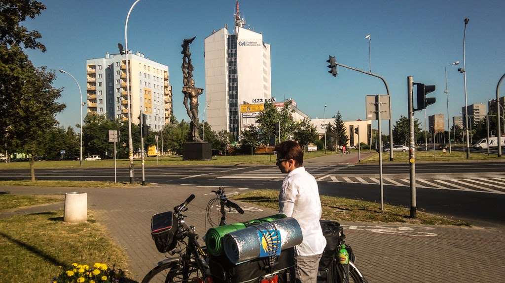
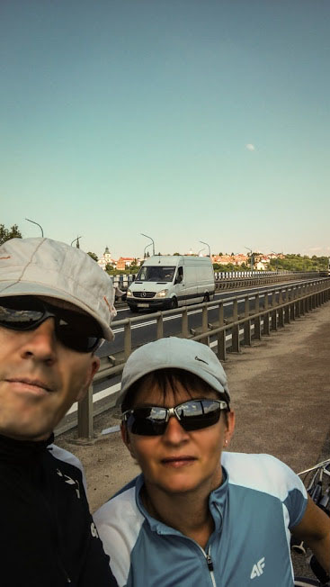

Drogi Świętego Jakuba 2015
Rowerami:
Dzień 1
Dzień 2
Dzień 3
Z plecakami:
Dzień 4
Dzień 5
Lipiec 2015
Relacja z przejazdu rowerami
Małopolską
Drogą Świętego Jakuba:
Stalowa Wola - Kazimierza Wielka oraz,
pieszej wędrówki
Beskidzką
Drogą Świetego Jakuba: Sułkowice - Wadowice.

„Stalowa Wola, 3 lipca 2015 r.”
„...a za busem Sandomierz”

 Drogi Świętego Jakuba 2015
Drogi Świętego Jakuba 2015